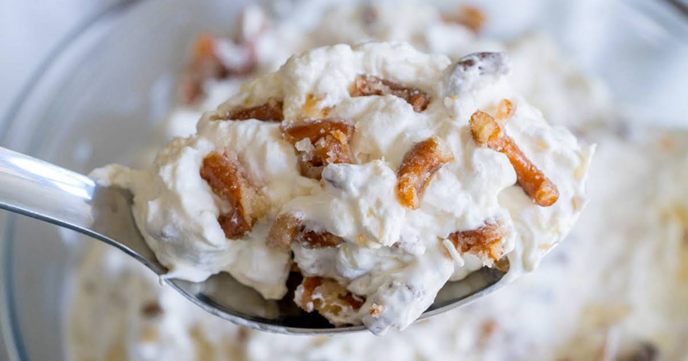

Fruit Salad Recipe
Description
This fruit salad is a bit heavier than traditional fruit salads, taking inspiration from fluff style fruit salads. This fruit salad is great either immediately after preparation, refrigerated, or frozen for two or three hours. Excellent for the summer!
Ingredients
- 1 can Fruit Cocktail Mix (Drained)
- 1 can Pineapple Chunks (Drained)
- Fresh Grapes (Halved)
- Chopped Apple
- 1 cup Heavy Cream
- 1/2 cup Sweetened Condensed Milk
- Splash of Vanilla Extract
- 1/2 tablespoon Lemon Juice
- Pinch of Salt
- Crushed Walnuts
Steps
- In a separate bowl, beat heavy cream with vanilla/Rooh Afza until soft peaks form
- Mix in sweetened condensed milk and continue beating the mixture until stiff peaks form
- In the serving dish, mix in the fruits with lemon juice and a pinch of salt
- Pour whipped cream mixture over fruit and fold together gently
- Top with crushed walnuts